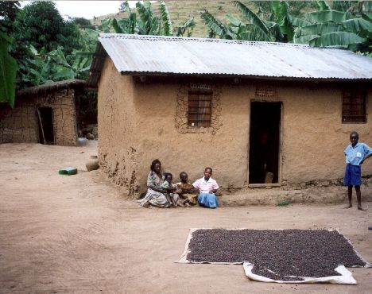
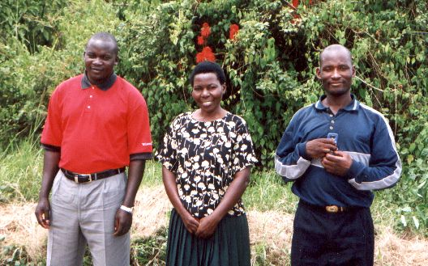

Juni 2003
Bram Moolenaar, penningmeester van ICCF Holland, bezocht het Kibaale Children's Centre in juni 2003. Dit zijn fotos die toen gemaakt zijn.

|
De timmerwerkplaats van de vakschool. De opleiding loopt nu een tijdje, zodat
de werkstukken echt bruikbaar zijn. Het meubilair voor de school wordt nu hier
gemaakt. Dat scheelt flink in de kosten.
|

|
Vierhonderd kippen bij elkaar, dat maakt flink herrie!
De eieren worden verkocht, daarmee wordt wat geld verdiend om het
project draaiende te houden.
|

|
De kliniek is druk als altijd. Deze foto is gemaakt op een rustige dag.
Vier verplegers en assistenten behandelen patienten en delen medicijnen uit.
Een keer per week komt er een dokter.
|
|

|
Een van de gesponsorde kinderen, Jackline Nampuga, met familie voor hun huis.
Dit is een typisch huis voor deze streek: muren van klei en twijgen, een dak
van golfplaten. Op de voorgrond ligt koffie te drogen, in de achtergrond zie
je matoke planten (een soort banaan).
|
|

|
Charles, Rose en Chepas verzorgen de administratie voor de gesponsorde
kinderen. Ze vertalen brieven en zoeken de kinderen thuis op als dat nodig is.
Zij bepalen ook of nieuwe kinderen in aanmerking komen om gesponsord te worden.
|

|
De middelbare school heeft een nieuw gebouw met ruime klaslokalen.
Het is nog te klein, een klas zit in de oude school.
|

|
De vakschool geeft een opleiding voor kleermaker/naaister.
Zelfs op zaterdag wordt er enthousiast gebruik van gemaakt.
Electriciteit is er niet, dus worden de naaimachines met de voeten aangedreven.
|

|
De nieuwe "school truck" wordt gebruikt voor het ophalen van bouwmaterialen,
water halen en vervoer van kinderen naar evenementen.
Nieuw is de truck niet: Dit model Tata wordt al jaren niet meer gemaakt.
Het is een indiase versie van een oud model Mercedes. Het voordeel is dat
onderdelen goedkoop zijn en de meeste monteurs er aan kunnen sleutelen.
|
bezoek verslag
top
|